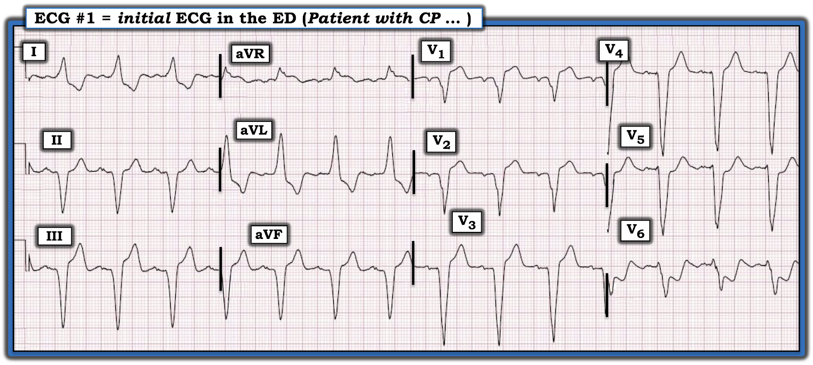
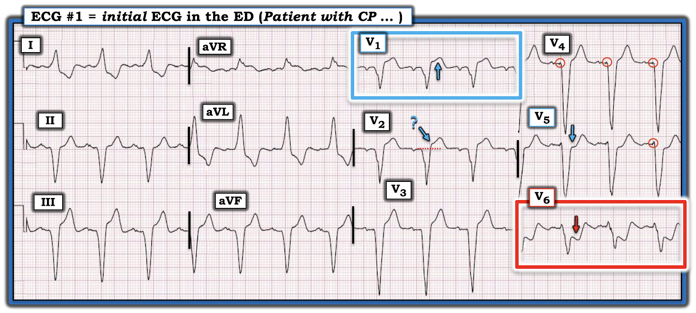
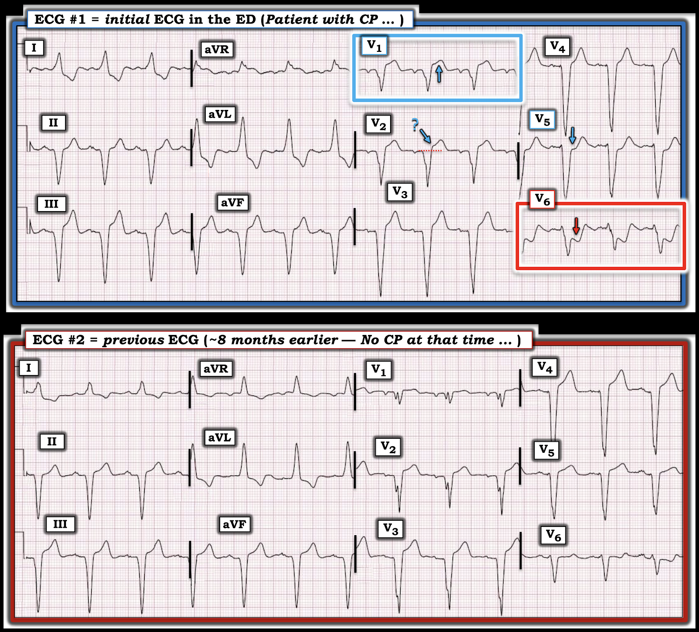

ECG Blog #492 — Bối rối vì máy tạo nhịp
Bệnh nhân hôm nay là một người đàn ông lớn tuổi có máy tạo nhịp vĩnh viễn được đặt cách đây ~1 năm vì blốc AV hoàn toàn. Lần này ông đến ED (khoa cấp cứu – Emergency Department) vì đau ngực mới (CP – Chest Pain) khởi phát từ sớm trong ngày và vẫn còn kéo dài. Bệnh nhân ổn định huyết động tại thời điểm ghi điện tâm đồ ở Hình-1.
CÂU HỎI:
- Bạn diễn giải điện tâm đồ ở Hình-1 như thế nào?
- Có nên kích hoạt phòng thông tim không?


Suy nghĩ của tôi về CA BỆNH hôm nay:
Chúng ta được biết bệnh nhân hôm nay có máy tạo nhịp — và ông đến khám vì đau ngực mới kéo dài suốt một ngày. Các câu hỏi đặt ra gồm:
- Chúng ta có thấy bằng chứng về máy tạo nhịp của bệnh nhân này trên điện tâm đồ #1 không? Nếu có — máy tạo nhịp có hoạt động đúng không?
- Có thể đánh giá điện tâm đồ của một bệnh nhân mang máy tạo nhịp để tìm thay đổi ST-T của OMI cấp không? Nếu có — có dấu hiệu nào đáng lo ngại trên điện tâm đồ #1 không?
TRẢ LỜI: Có thể phát hiện OMI cấp trên một bản ghi tạo nhịp không?
Như thấy ở Hình-2 — có gai tạo nhịp (trong các vòng tròn nhỏ màu ĐỎ ở chuyển đạo V4,V5). Những gai nhỏ tương tự thỉnh thoảng thấy ở các chuyển đạo khác.
- Ít nhất ở chuyển đạo V4,V5 — chúng ta thấy các gai tạo nhịp này đi ngay trước những phức bộ QRS rộng có hình dạng giống LBBB — vì vậy máy tạo nhịp có vẻ đang bắt được thất một cách phù hợp với tần số ~85/phút.
- Ít nhất là đôi khi, có thể đánh giá một điện tâm đồ tạo nhịp để tìm thay đổi ST-T của thiếu máu cục bộ cấp. Việc đánh giá này khó hơn do QRS của các nhát tạo nhịp bị giãn rộng (và hệ quả là hình dạng ST-T bị biến đổi) — nhưng có những lúc chúng ta có thể thấy bằng chứng OMI cấp trên một bản ghi tạo nhịp hoàn toàn.
- Trong những trường hợp như vậy — áp dụng tiêu chuẩn Sgarbossa cải biên theo Smith (Smith-Modified Sgarbossa Criteria) giúp nhận ra các bất thường ST-T dù tạo nhịp hoàn toàn (Xem Pearl #4 trong ECG Blog #282 để ôn lại tiêu chuẩn Sgarbossa cải biên theo Smith).
ĐIỂM THEN CHỐT (PEARL) #1:
Thậm chí hơn cả việc áp dụng tiêu chuẩn Sgarbossa cải biên theo Smith — tôi ưa đánh giá thiếu máu cục bộ cấp trên bản ghi tạo nhịp bằng cách tìm những thay đổi ST-T mà lẽ ra không được có ở đó! Điều này hẳn phải thấy rõ ở Hình-2:
- Không đời nào mà ST chênh xuống dốc xuống 4+ mm ở chuyển đạo V6 kèm phần cuối sóng T dương lại có thể là một dấu hiệu "bình thường" (trong hình chữ nhật màu ĐỎ ở Hình-2). Nếu có gì thì — chúng ta phải chờ đợi thay đổi ST-T thứ phát của LBBB hay của bản ghi tạo nhịp có hướng ngược với hướng QRS chủ yếu âm ở chuyển đạo V6.
- Trong bối cảnh ST chênh xuống dốc xuống rõ ràng bất thường ở chuyển đạo V6 — ST chênh xuống dẹt kín đáo hơn ở chuyển đạo V5 kế bên (mũi tên XANH ở chuyển đạo này) cũng là bất thường.
- Chuyển đạo tiếp theo ở Hình-2 lọt vào "mắt" tôi — là chuyển đạo V1 (trong hình chữ nhật màu XANH) — vì mức ST chênh lên tại điểm J ở chuyển đạo này rõ ràng không tương xứng với kích thước khiêm tốn của sóng S ở đây (Mức ST chênh lên tương đối ở chuyển đạo V1 có vẻ đạt tiêu chuẩn 25% của tiêu chuẩn Sgarbossa cải biên theo Smith được trình bày trong ECG Blog #282).
- Do ST chênh lên rõ ràng bất thường ở chuyển đạo V1 — tôi cho rằng ST chênh lên tại điểm J ở chuyển đạo V2 kế bên cũng bất thường. Dù không đạt tiêu chuẩn 25% của Sgarbossa cải biên theo Smith — điểm J ở chuyển đạo V2 này gập góc sắc (mũi tên XANH ở V2) — thay vì chuyển tiếp mềm mại hơn giữa điểm J và đoạn ST như thường thấy (Lưu ý sự chuyển tiếp mềm mại hơn nhiều giữa điểm J và đoạn ST ở các chuyển đạo V3,V4 kế bên mà tôi đánh giá là bình thường).
ĐIỀU CỐT LÕI:
Phải thừa nhận rằng những thay đổi ST-T tôi mô tả ở trên cho chuyển đạo V2 và V5 ở Hình-2 là kín đáo — nhưng ở bệnh nhân lớn tuổi có đau ngực mới này — ST chênh xuống có hình dạng bất thường và mức độ không tương xứng ở chuyển đạo V6, được củng cố bởi ST chênh lên không tương xứng ở chuyển đạo V1 — phải được xem là OMI cấp cho đến khi chứng minh được điều ngược lại!
- ĐIỂM THEN CHỐT (PEARL) #2: Sự hiện diện của ST chênh lên dạng vòm ở chuyển đạo V1,V2 cùng ST chênh xuống rõ ràng bất thường ở chuyển đạo V5,V6 phù hợp với xoáy trước tim (Precordial Swirl) — gợi ý tắc LAD đoạn gần (Xem ECG Blog #380 để biết thêm về xoáy trước tim).
- Trả lời câu hỏi đặt ra ở đầu ca hôm nay: CÓ, nên kích hoạt phòng thông tim ngay lập tức dựa trên bệnh sử đau ngực mới và các dấu hiệu điện tâm đồ ở Hình-2.


Ca bệnh tiếp diễn:
Đã tìm được một bản ghi trước đây của bệnh nhân hôm nay. Để tiện so sánh ở Hình-3 — tôi đặt điện tâm đồ trước đây này, ghi cách đó ~8 tháng, cạnh điện tâm đồ ban đầu hôm nay.
- Việc có điện tâm đồ cũ này có ủng hộ quyết định kích hoạt phòng thông tim của bạn không?


So sánh với bản ghi trước đây:
Việc có điện tâm đồ cũ của bệnh nhân hôm nay xoá bỏ mọi nghi ngờ về sự cần thiết phải kích hoạt phòng thông tim!
- ĐIỂM THEN CHỐT (PEARL) #3: Cách TỐT NHẤT để mài giũa kỹ năng đọc điện tâm đồ — là luyện "mắt" nhận ra những dấu hiệu kín đáo bằng cách so sánh với các bản ghi theo dõi sau đó, để thấy những dấu hiệu kín đáo hơn trên bản ghi ban đầu đã tiến triển theo thời gian như thế nào.
- So sánh từng chuyển đạo một giữa điện tâm đồ #1 và điện tâm đồ #2 ở Hình-3 cho thấy thay đổi đáng kể ở hầu như mọi chuyển đạo!
- Trước hết, nhìn vào 2 chuyển đạo đã giúp chúng ta chẩn đoán — dễ thấy ST-T ở chuyển đạo V5 và V1 của Hình-1 thực sự bất thường đến mức nào!
- Nhìn tiếp vào những thay đổi kín đáo hơn ở chuyển đạo V2 và V5 mà tôi đã nêu ở trên — chúng ta có thể xác nhận nhận xét của tôi là đúng khi thấy ST chênh lên ở chuyển đạo V2 trên điện tâm đồ #1 nhiều hơn so với điện tâm đồ cũ — và ST chênh xuống dẹt, kín đáo ở chuyển đạo V5 của điện tâm đồ #1 hoàn toàn không có trên điện tâm đồ cũ.
- Khi so sánh 2 bản ghi ở Hình-3, có thay đổi ST-T ở các chuyển đạo khác — nhưng những thay đổi đó khó phát hiện hơn nhiều — điều này xác nhận ĐIỂM THEN CHỐT (PEARL) #4 của tôi trong ca hôm nay = Đánh giá thiếu máu cục bộ cấp trên bản ghi tạo nhịp thường khó hơn — nhưng chắc chắn không phải là không thể.
KẾT LUẬN CA BỆNH:
Phòng thông tim đã được kích hoạt. Thông tim cho thấy:
- Bệnh 3 nhánh mạch vành đáng kể.
- Hẹp 90% đoạn xa thân chung động mạch vành trái (LMain).
- Hẹp 50% đoạn giữa LAD.
- Hẹp 90% lỗ vào LCx (còn thông).
- Hẹp 50% đoạn giữa RCA.
Vùng hẹp ở thân chung động mạch vành trái đã được đặt stent thành công sang LAD còn thông. Bệnh nhân diễn tiến tốt khi theo dõi.
====================================
ĐIỂM THEN CHỐT (PEARL) #5: Nếu không được cho biết — có lẽ tôi đã không nhận ra bệnh nhân hôm nay mang máy tạo nhịp từ điện tâm đồ ban đầu ở Hình-1. Gai tạo nhịp thường khó phát hiện vì nhiều lý do:
- Có thể máy tạo nhịp bị trục trặc.
- Có thể có nhiễu tín hiệu và nhiễu và/hoặc "tạp âm".
- Máy tạo nhịp hiện đại ngày càng dùng dây điện cực lưỡng cực — và dây điện cực lưỡng cực tạo gai nhỏ hơn trên điện tâm đồ.
- Cài đặt bộ lọc chưa tối ưu. Điều này đặc biệt đúng khi bộ lọc thông thấp được đặt dưới giá trị chuẩn 150 Hz. Dù vậy — ngay cả ở 150 Hz, tỷ lệ bệnh nhân có gai tạo nhịp nhìn thấy được trên điện tâm đồ chuẩn đã được ghi nhận là thấp hơn nhiều so với tỷ lệ phát hiện gai tạo nhịp trên điện tâm đồ với bộ lọc thông thấp cao hơn ở mức 300 Hz (Sun và cs. — Chin Med J 132(5):534-541, 2019).
Về cài đặt bộ lọc:
Tôi cho rằng cài đặt bộ lọc chưa tối ưu là lý do thường gặp nhất khiến gai tạo nhịp không dễ thấy trên nhiều bản ghi. Rất thường xuyên — cài đặt bộ lọc bị bỏ qua.
- Thường dùng các cài đặt khác nhau cho chế độ theo dõi, khi trọng tâm là xác định nhịp, so với chế độ chẩn đoán, khi trọng tâm là diễn giải dạng sóng 12 chuyển đạo.
- Lọc nhiều hơn thường được dùng ở chế độ theo dõi, với cài đặt thông dụng trong khoảng 0.5 Hz đến 40 Hz. Làm vậy có ưu điểm giảm thiểu nhiễu và trôi đường nền vốn có thể ảnh hưởng đến việc diễn giải nhịp.
- Ngược lại — một dải thông rộng hơn (thường từ 0.05 Hz đến 150 Hz) — được khuyến cáo cho chế độ chẩn đoán, nơi việc phân tích đoạn ST chính xác hơn là thiết yếu.
- Máy tạo nhịp lưỡng cực hiện đại tạo gai tạo nhịp có biên độ nhỏ hơn so với các thiết bị cũ, khiến chúng khó phát hiện hơn trên điện tâm đồ. Cần nhận thức rằng cài đặt bộ lọc là quan trọng — đặc biệt nếu bạn thấy mình tìm gai vô vọng trên bản ghi của một bệnh nhân được cho là có máy tạo nhịp.
==================================
Lời cảm ơn: Xin cảm ơn 林柏志 (Đài Loan) đã chia sẻ ca bệnh và bản ghi này.
==================================